Nguyễn Hòa Bình
Sinh viên khóa K70 ngành Công nghệ vật liệu tại Trường Đại học Công nghệ, Đại học Quốc gia Hà Nội (UET-VNU).
Giới thiệu Bản thân
Tôi hiện là sinh viên khóa K70 ngành Công nghệ vật liệu tại UET. Với lòng nhiệt huyết và định hướng nghề nghiệp rõ ràng, tôi đang nỗ lực học hỏi để làm chủ các kỹ nghệ phần mềm và giải pháp trí tuệ nhân tạo hiện đại.
Môn học Kỹ năng số là cơ sở giúp tôi chuẩn hóa toàn bộ tư duy thao tác, thu thập dữ liệu và làm việc nhóm trong môi trường số hóa. Báo cáo này đóng vai trò tập hợp, lưu trữ và phản ánh các kết quả thực nghiệm cũng như bài học kinh nghiệm sâu sắc mà tôi đã gặt hái được trong học kỳ vừa qua.
Mục Tiêu Của Portfolio Này
- Lưu trữ học thuật: Hệ thống hóa, báo cáo và lưu trữ minh bạch toàn bộ các minh chứng thực hành của học phần Kỹ năng số một cách khoa học.
- Phản ánh nhận thức: Thể hiện quá trình chuyển biến tư duy từ việc sử dụng công cụ bản năng sang khả năng làm chủ, điều phối và ứng dụng AI có trách nhiệm.
- Xây dựng thương hiệu cá nhân: Tạo dựng nền tảng hồ sơ năng lực số (Digital Portfolio) chuyên nghiệp làm cơ sở ứng tuyển các vị trí thực tập, nghiên cứu chuyên ngành vi mạch bán dẫn.
Mục Tiêu Phát Triển Cá Nhân
Ngắn hạn: Học tập nền tảng
Duy trì điểm số học tập xuất sắc (GPA cao) tại UET. Nắm vững kiến thức nền tảng về khoa học vật liệu, vật lý linh kiện, mạch điện tử và các ngôn ngữ mô tả phần cứng (như Verilog/VHDL).
Trung hạn: Tích lũy thực tế
Tìm kiếm cơ hội thực tập tại các tập đoàn vi mạch, bán dẫn. Học hỏi sâu về quy trình thiết kế IC (IC Design flow) và tham gia nghiên cứu khoa học các vật liệu bán dẫn mới cùng giảng viên UET.
Dài hạn: Kỹ sư thiết kế chip
Trở thành Kỹ sư thiết kế vi mạch (IC Design Engineer) chuyên nghiệp. Nghiên cứu và phát triển các giải pháp vật liệu bán dẫn tiên tiến, đóng góp vào sự phát triển của ngành công nghiệp điện tử.
Thao tác cơ bản với tệp tin và thư mục
Hướng dẫn chi tiết các thao tác quản lý dữ liệu trên môi trường Windows.
1. Tổng quan các thao tác
Bài thực hành này giúp sinh viên làm quen với việc điều hướng File Explorer, tạo mới, đổi tên, sao chép, di chuyển và xóa các tệp/thư mục một cách khoa học và an toàn.
2. Chi tiết các bước thực hiện
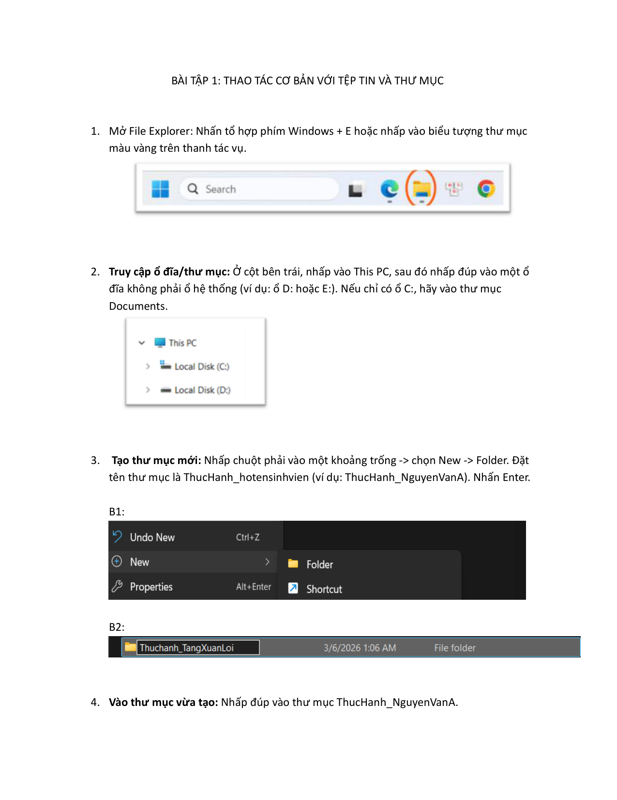
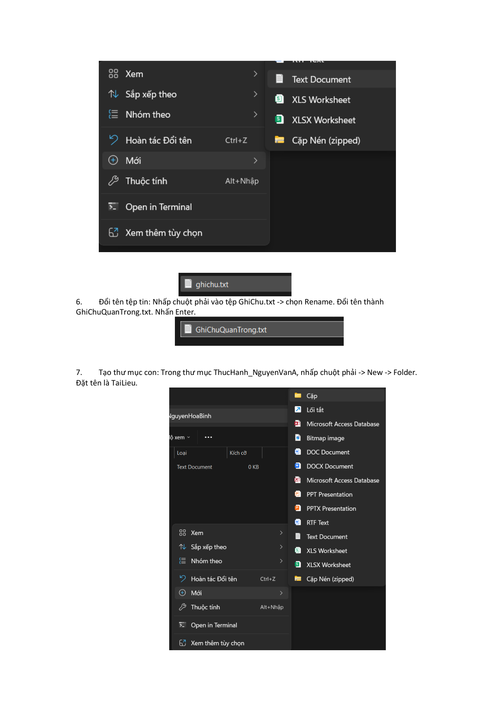
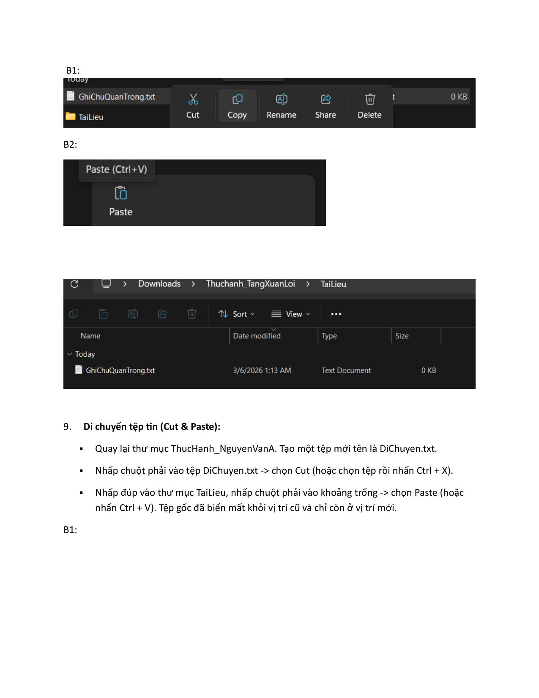
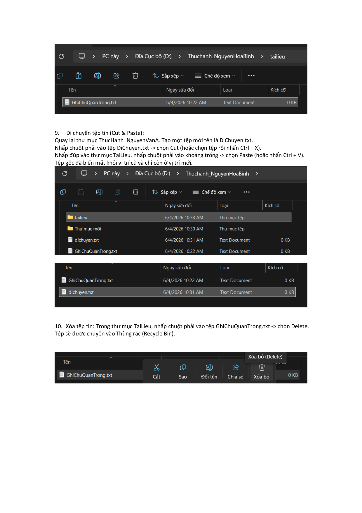
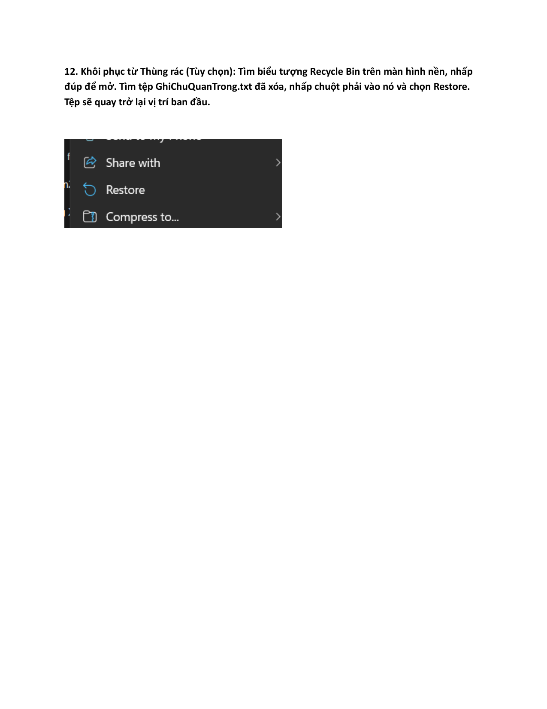
3. Minh chứng học tập
Xem Báo cáo Bài 1 (Bài1.pdf)Kỹ năng tìm kiếm và đánh giá thông tin học thuật
Chủ đề: Ứng dụng của Học máy (Machine Learning) trong Khám phá và Thiết kế Vật liệu mới: Cơ hội và Thách thức.
1. Lý do chọn chủ đề & Phạm vi
Lý do: Đối với ngành Công nghệ Vật liệu, việc khám phá vật liệu mới bằng phương pháp "thử và sai" truyền thống tốn rất nhiều nguồn lực. Sự ra đời của Học máy (ML) và Trí tuệ nhân tạo (AI) giúp dự đoán cấu trúc tinh thể, thiết kế các hợp kim siêu nhẹ, vật liệu pin thế hệ mới chỉ trong thời gian rất ngắn. Đây là chủ đề mang tính liên ngành mạnh mẽ, sát với định hướng công nghệ tại UET.
Phạm vi tìm kiếm: Khoa học vật liệu tính toán (Computational Materials Science) từ 2018 đến 2024. Từ khóa: "Machine learning in materials science", "AI-driven materials discovery".
2. Quá trình tìm kiếm & Đánh giá nguồn
Sử dụng 5 loại nguồn uy tín: Cơ sở dữ liệu học thuật (ScienceDirect, SpringerLink, IEEE Xplore, Google Scholar), tạp chí chuyên ngành đỉnh cao (Nature, npj Computational Materials), Sách chuyên khảo, Báo cáo Bộ Năng lượng Mỹ (DOE) và Nguồn mở (MIT Technology Review).
| Tài liệu nổi bật | NXB / Cơ quan | Đánh giá nhanh | Xếp hạng |
|---|---|---|---|
| Merchant, A. et al. (2023) Scaling deep learning for materials discovery |
Tạp chí Nature Nhóm tác giả Google DeepMind |
Nghiên cứu đột phá về mô hình GNoME tìm ra 2.2 triệu vật liệu mới. Độ tin cậy tuyệt đối. | ⭐⭐⭐⭐⭐ |
| Schmidt, J. et al. (2019) Recent advances and applications... |
npj Computational Materials (Q1) | Bài review cực kỳ toàn diện, trích dẫn >1500 lần. Tác giả uy tín. | ⭐⭐⭐⭐⭐ |
| Schutt, K. et al. (2020) Machine Learning Meets Quantum Physics |
Springer (Sách chuyên khảo) |
Sách giáo trình chuyên sâu, liên kết giữa vật lý lượng tử (DFT) và ML. Rất giá trị cho kỹ sư. | ⭐⭐⭐⭐⭐ |
| US DOE (2021) Basic Research Needs for Data Science... |
Bộ Năng lượng Hoa Kỳ | Định hướng chính sách vĩ mô cấp quốc gia, số liệu thống kê chi tiết và cực kỳ đáng tin cậy. | ⭐⭐⭐⭐⭐ |
3. Tóm tắt kết quả phân tích
- Chuyển đổi mô hình: Dịch chuyển từ "thực nghiệm truyền thống" (Edison method) sang "dự đoán bằng dữ liệu" với sự kết hợp của ML và DFT (mô phỏng phiếm hàm mật độ).
- Ứng dụng đột phá: AI (đặc biệt từ DeepMind) đang đóng vai trò then chốt trong khám phá pin rắn (solid-state batteries) an toàn hơn, pin năng lượng mặt trời và hợp kim hàng không vũ trụ.
- Thách thức (Data Bottleneck): Thiếu hụt dữ liệu chất lượng cao do thí nghiệm âm tính (các vật liệu tổng hợp thất bại) thường không được công bố.
- Đề xuất: Sinh viên Công nghệ Vật liệu UET cần trang bị thêm kỹ năng lập trình (Python) và Khoa học dữ liệu (Data Science). Sự giao thoa Vật liệu & Khoa học máy tính là "chìa khóa" 4.0.
4. Minh chứng học tập
Xem Báo cáo Bài 2 (Bai2.pdf)Tổng quan về Trí tuệ nhân tạo (AI)
Thực hành nghệ thuật Prompt Engineering để tối ưu hóa hiệu suất làm việc với Large Language Models (LLMs).
1. Các tác vụ thực nghiệm
Trong bài thực hành này, tôi tiến hành so sánh kết quả sinh văn bản của AI (Gemini) dựa trên 3 cấp độ Prompt (Cơ bản, Cải tiến, Nâng cao) thông qua 3 tác vụ điển hình:
- Tác vụ 1: Tóm tắt tài liệu (Tóm tắt văn bản miêu tả "cây bàng").
- Tác vụ 2: Giải thích khái niệm phức tạp (Giải thích "Đạo hàm" cho người mới học Toán).
- Tác vụ 3: Tạo câu hỏi ôn tập (Thiết kế bộ câu hỏi trắc nghiệm lập trình Python).
2. Phân tích & So sánh cấp độ Prompt
| Cấp độ Prompt | Đặc điểm & Cấu trúc | Chất lượng đầu ra (Output) |
|---|---|---|
| Prompt cơ bản VD: "Tóm tắt đoạn văn sau" |
Quá chung chung, không có hướng dẫn cụ thể, không quy định định dạng. | Trả lời quá ngắn gọn, lộn xộn, dễ lệch yêu cầu, tính nhất quán thấp. |
| Prompt cải tiến VD: "Hãy tóm tắt thành 5-7 câu, làm nổi bật ý chính..." |
Có yêu cầu đơn giản, ràng buộc được độ dài và format cơ bản. | Ổn định hơn, khá đầy đủ ý, phù hợp cho nhu cầu thao tác nhanh. |
| Prompt nâng cao VD: "Bạn là giảng viên... Hãy tóm tắt theo cấu trúc 4 phần..." |
Sử dụng Role Prompting, cấu trúc đa lớp rõ ràng (bullet points), ràng buộc đối tượng mục tiêu. | Cực kỳ logic, đầy đủ chi tiết, chất lượng cao, kiểm soát AI rất tốt. |
3. Hình ảnh phân tích giao diện prompt
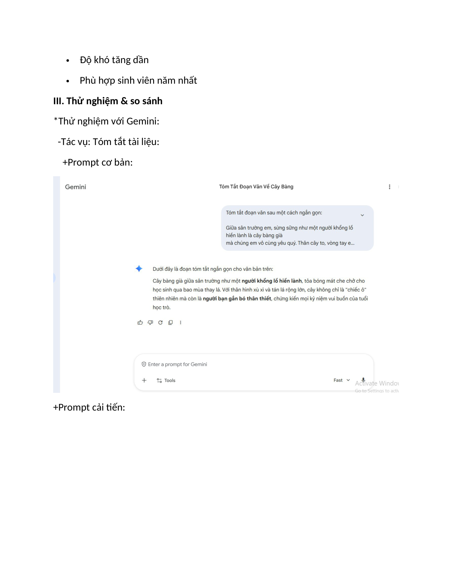
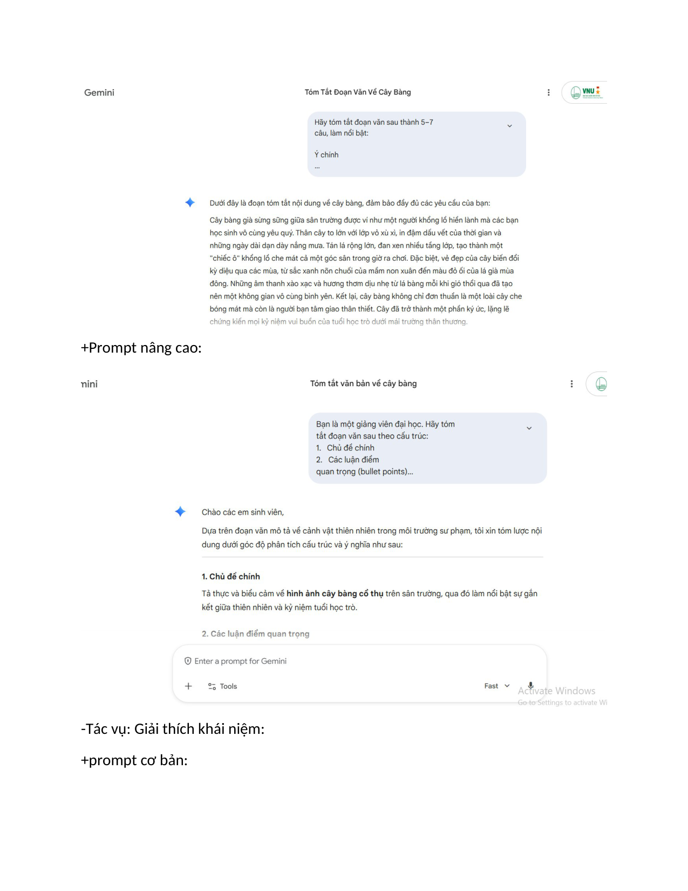
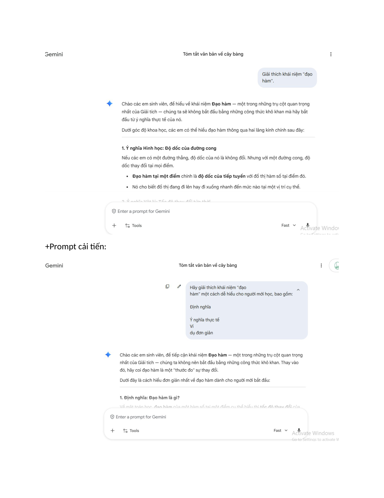
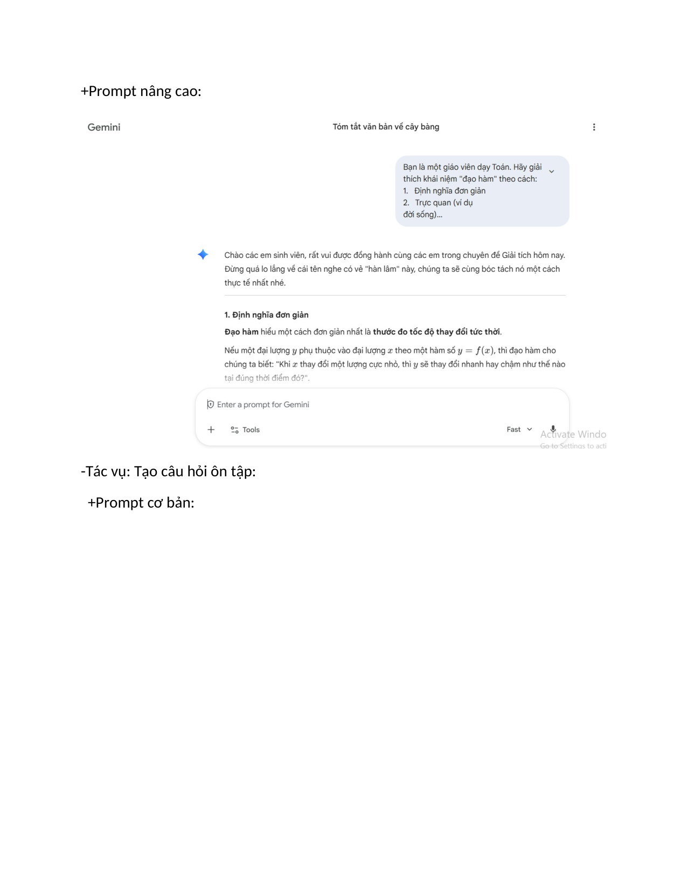
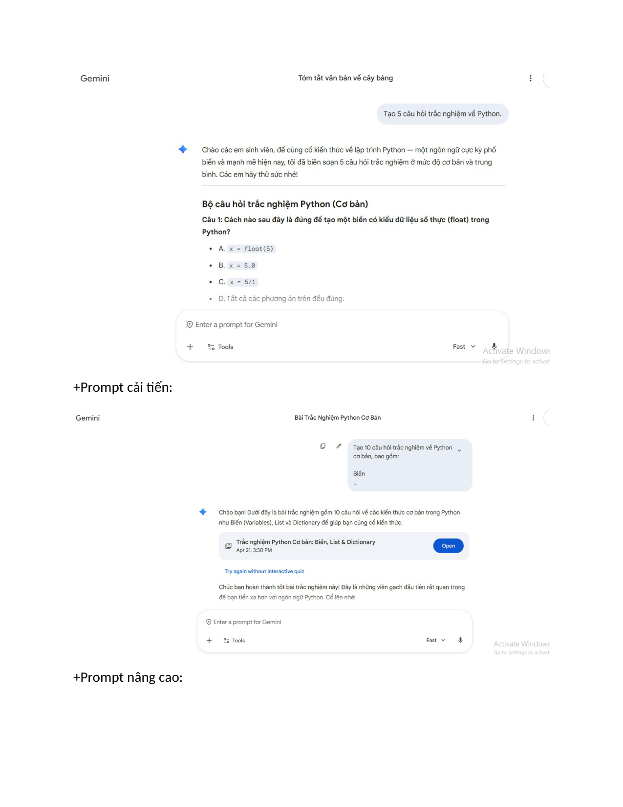
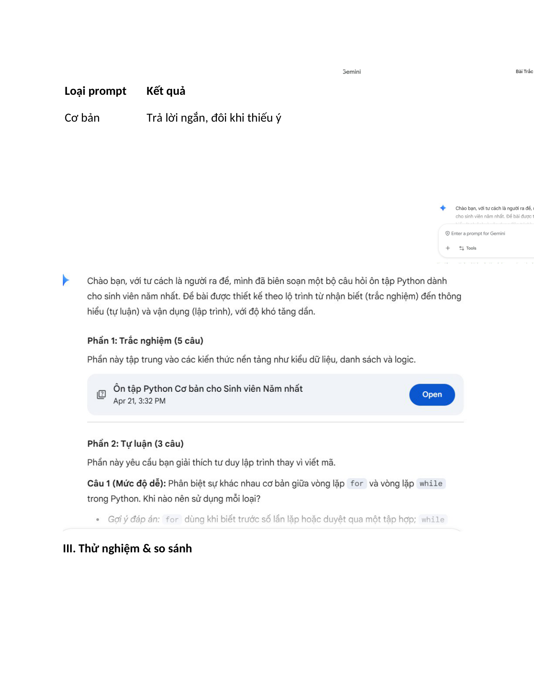
4. Nguyên tắc viết Prompt hiệu quả
1. Rõ ràng mục tiêu
Sử dụng các động từ hành động dứt khoát như “tóm tắt”, “giải thích”, “tạo câu hỏi” để định hướng nội dung chính xác.
2. Thêm ràng buộc
Quy định chặt chẽ về số lượng (số câu, độ dài) và định dạng đầu ra (danh sách bullet, cấu trúc step-by-step).
3. Gán vai trò (Role)
Cung cấp ngữ cảnh chuyên môn cho AI ("Bạn là giảng viên", "Bạn là kỹ sư") để đảm bảo văn phong và độ chuyên sâu phù hợp.
5. Minh chứng học tập
Xem Báo cáo Bài 3 (Bai3.pdf)Kỹ năng sử dụng công cụ hợp tác trực tuyến
Điều phối dự án "Kịch bản thuyết trình: AI và Công nghệ số trong Giáo dục".
1. Thiết lập hệ sinh thái công cụ
Để đảm bảo luồng công việc của nhóm diễn ra trơn tru, tôi đã đề xuất sử dụng 4 công cụ chính:
- Trello (Quản lý dự án): Phân chia Kanban cơ bản (To Do, Doing, Review, Done). Các task được gán label ưu tiên và deadline rõ ràng.
- Google Docs & Canva (Soạn thảo cộng tác): Viết kịch bản real-time và thiết kế slide đồng bộ.
- Zalo (Giao tiếp nhóm): Nhắn tin tức thời, đôn đốc tiến độ và ghim các link quan trọng.
- Google Drive (Lưu trữ): Thiết lập thư mục cấp quyền "Editor" để lưu trữ an toàn các phiên bản tài liệu.
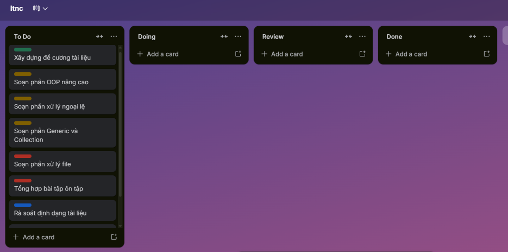
Hình 1: Ảnh minh chứng không gian làm việc Trello quản lý task của Nhóm 37
2. Quản lý tác vụ & Tài nguyên
Trong quá trình làm việc, tôi tuân thủ nghiêm ngặt các quy chuẩn hợp tác, đảm bảo tiến độ và quản lý file tối ưu:
- Quản lý deadline: 100% nhiệm vụ trên Trello đều có thời hạn.
- Tương tác chủ động: Hơn 10 lượt/tuần trên Zalo, thường xuyên cập nhật lịch sử chỉnh sửa trên nền tảng.
- Quy tắc đặt tên file: Áp dụng công thức
[TênNhóm]_[TênTàiLiệu]_[PhiênBản](VD: Nhom37_KichBan_AI_v1.docx) để quản lý phiên bản rõ ràng.
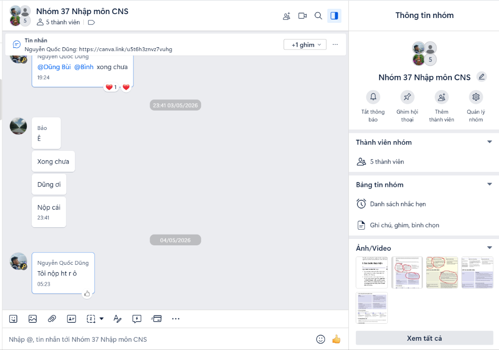
Hình 2: Giao diện chat Zalo nhóm 37, chủ động nhắc nhở và đôn đốc tiến độ
3. Thách thức và Giải pháp
| Thách thức | Mô tả hiện tượng | Giải pháp xử lý thực tế |
|---|---|---|
| Trôi thông tin trên Zalo | Tin nhắn và link quan trọng bị trôi mất. | Ghim tin nhắn và dán toàn bộ link vào phần "Description" trên bảng Trello (Single Source of Truth). |
| Xung đột chỉnh sửa Docs | Xóa nhầm đoạn hoặc format bị lộn xộn. | Áp dụng luật "Phân vùng không gian" và bắt buộc sử dụng chế độ "Suggesting" khi sửa chéo. |
| Chênh lệch thời gian làm việc | Nhóm không online cùng lúc, tiến độ tắc nghẽn cục bộ. | Sử dụng tính năng "Tagging" (@mention) trên Trello khi hoàn thành công đoạn để tự động thông báo. |
4. Minh chứng học tập
Xem Báo cáo Bài 4 (Bai4.pdf)Sáng tạo nội dung số
Sử dụng AI tạo sinh để hỗ trợ sáng tạo nội dung truyền thông.
1. Sản phẩm & Quy trình
Sản phẩm: Bài viết Blog học thuật kết hợp Infographic tóm tắt nội dung về chủ đề "Tác động của AI đến Giáo dục đại học".
Quy trình (AI ~40%, Người ~60%): Sử dụng Gemini để brainstorm và lập dàn ý; DALL-E 3 tạo hình ảnh Thumbnail; Canva AI thiết kế bố cục thô. Con người viết lại 60% văn bản bổ sung số liệu thực tế tại Việt Nam, chỉnh sửa ánh sáng ảnh, và thiết kế thủ công lại 60% Infographic.
2. Phân tích quá trình tương tác AI
Với Gemini, tôi sử dụng prompt thiết lập vai trò chuyên gia EdTech để viết bài luận. Đoạn văn thô sau đó được tôi viết lại 60%, cắt bỏ các câu từ sáo rỗng đặc trưng của AI, bổ sung số liệu thực tế về việc cấm sử dụng ChatGPT trong bài luận tại một số trường đại học Việt Nam.
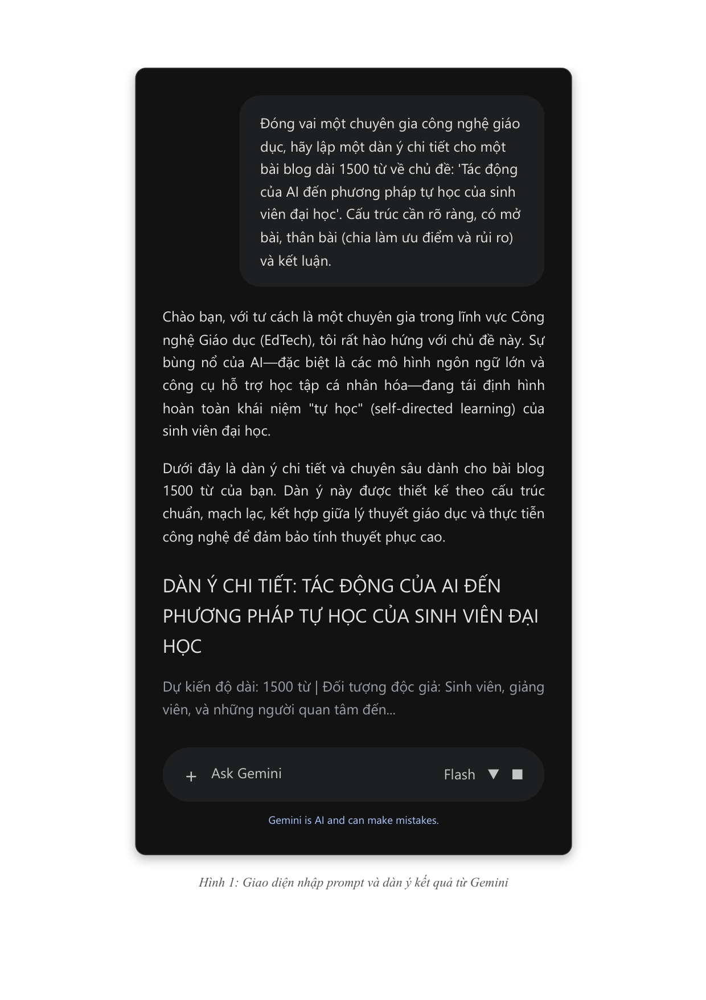
Hình 1: Dàn ý từ Gemini
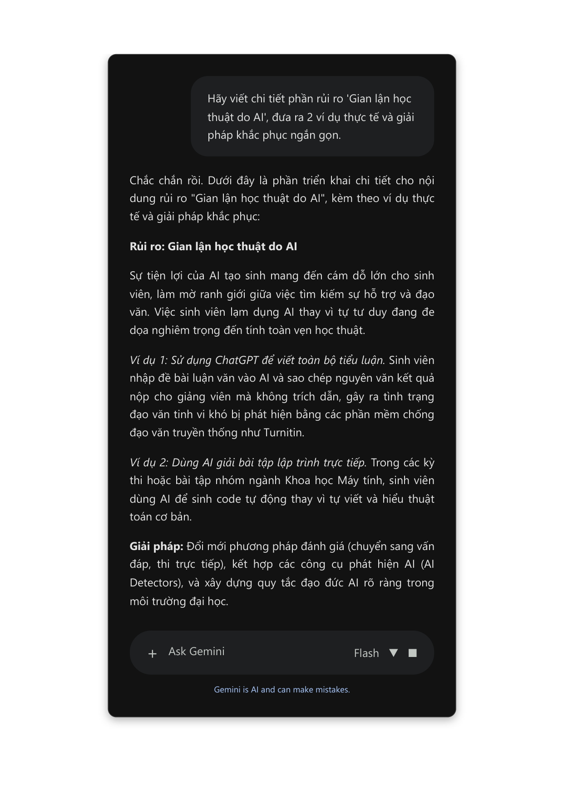
Hình 2: Triển khai rủi ro
Với DALL-E 3, tôi sử dụng prompt mô tả chi tiết: "A conceptual digital illustration of a modern university student studying at a desk... flat vector art style". Ảnh được tải về và hậu kỳ tăng sáng 15% trong Lightroom để hài hòa với giao diện trang web.
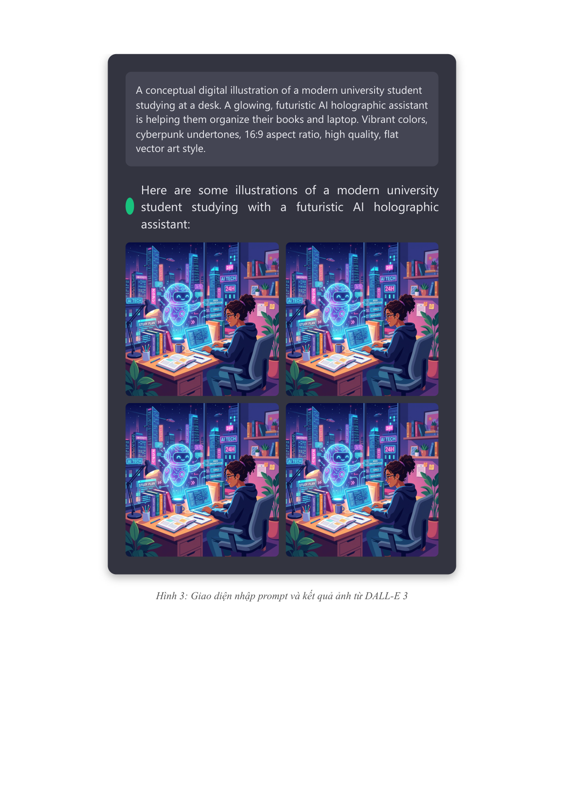
Hình 3: Kết quả 4 ảnh từ DALL-E 3
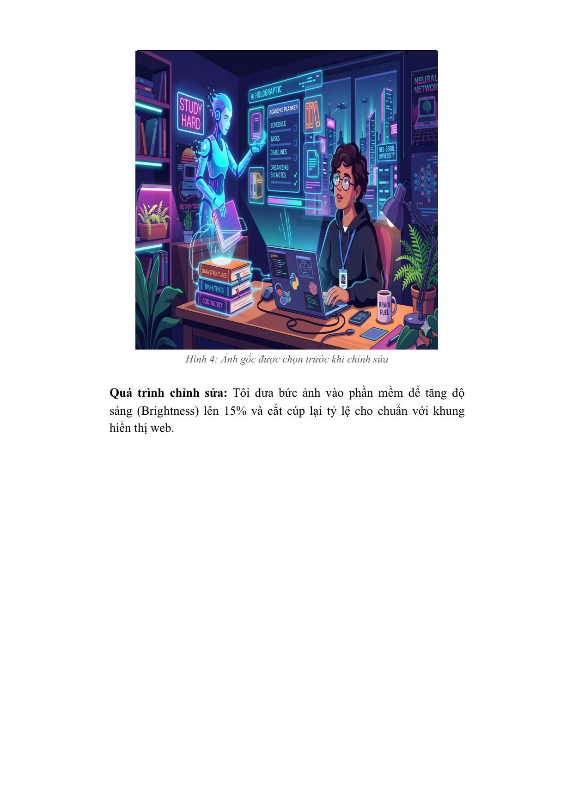
Hình 4: Ảnh gốc được chọn
Với Canva AI, Magic Design chỉ giúp đưa văn bản vào các hộp thoại thô. Tôi dành thêm 1 giờ can thiệp thiết kế: thay đổi bảng màu sang Navy-Cát vàng, sắp xếp lại phân cấp thị giác, căn lề chữ và đổi hệ thống icon đồng bộ.
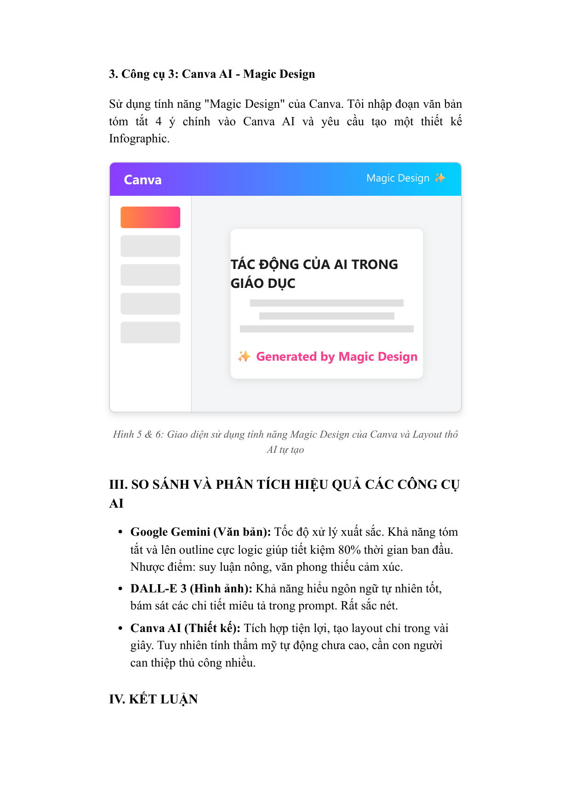
Hình 5: Sử dụng tính năng Magic Design của Canva
| Công cụ AI | Điểm mạnh | Điểm yếu | Can thiệp của con người |
|---|---|---|---|
| Gemini | Tốc độ outline nhanh. | Văn phong máy móc, lỗi ảo giác. | Viết lại bằng giọng văn sinh viên, đưa số liệu VN. |
| DALL-E 3 | Ảnh nét độc bản. | Khó kiểm soát chữ trong ảnh. | Chỉnh sửa độ sáng/tương phản bằng Lightroom. |
| Canva AI | Tạo layout thô nhanh chóng. | Thẩm mỹ tự động chưa cao. | Đổi bảng màu Navy-Cát, căn lề, thay icon. |
3. Đạo đức & Liêm chính học thuật
- Bản quyền & Đạo văn: Giới hạn tỷ lệ sử dụng AI dưới 50%, đóng vai trò "tham khảo" để không vi phạm bản quyền nghệ sĩ/tác giả.
- Thành kiến (Bias): Chủ động sử dụng prompt ép buộc AI tạo ra sự đa dạng nhằm tránh các định kiến (ví dụ: thiên kiến về chủng tộc, giới tính).
- Tính xác thực: Duy trì tư duy hoài nghi và thực hiện quy trình fact-check độc lập để đối phó với hiện tượng "ảo giác" (hallucination) của AI.
4. Minh chứng học tập
Xem Báo cáo Bài 5 (Bai5.pdf)Sử dụng AI có trách nhiệm và Đạo đức học thuật
Phân tích chính sách, đánh giá rủi ro và xây dựng nguyên tắc cá nhân trong kỷ nguyên AI.
1. Phân tích chính sách nhà trường
Trong bối cảnh AI phát triển, chính sách của UET mang tính cởi mở, thực tiễn và thích ứng tốt: Khuyến khích ứng dụng đổi mới sáng tạo như một công cụ hỗ trợ tư duy, đồng thời nghiêm cấm hành vi đạo văn (AI Plagiarism). Sinh viên phải tự kiểm chứng (fact-check) mọi thông tin và hoàn toàn chịu trách nhiệm về tính xác thực của dữ liệu trước hiện tượng "ảo giác" của AI.
2. Thực hiện nhiệm vụ & Quá trình tương tác AI
Khi viết tổng quan tài liệu về "Ứng dụng của vật liệu Nano Bạc", tôi đã đóng vai chuyên gia trên ChatGPT để lấy dàn ý. Quá trình xử lý đầu ra bao gồm:
- Kiểm chứng (Fact-check): Tra cứu trên Google Scholar để đối chiếu các cơ chế mà AI nêu ra.
- Viết lại (Paraphrase): Dùng ngôn ngữ học thuật cá nhân và kiến thức từ bài giảng để tổng hợp, tuyệt đối không sao chép nguyên văn.
- Trích dẫn minh bạch: Chủ động tuyên bố tỷ lệ sử dụng AI (như ChatGPT-4) vào lời nói đầu theo chuẩn APA/IEEE.
3. Phân tích các vấn đề đạo đức
Sự phân biệt giữa "Hỗ trợ hợp lý" và "Gian lận" phụ thuộc hoàn toàn vào mức độ đóng góp trí tuệ của con người. Bên cạnh đó là các rủi ro về vi phạm bản quyền khi AI tự động thu thập từ dữ liệu mở, cũng như "hội chứng teo não kỹ thuật số" làm thoái hóa kỹ năng tư duy phản biện nếu lạm dụng.
4. Infographic Minh họa: AI Có Trách Nhiệm
5. Minh chứng học tập
Xem Báo cáo Bài 6 (Bai6.pdf)Bài học & Trải nghiệm
Nhìn nhận lại chặng đường đã qua. Tổng kết kỹ năng tích lũy và định hướng chặng đường UET phía trước.
Trải Nghiệm Học Tập Thực Tế
Chuyển hóa nhận thức qua các bài thực hành
Học phần Kỹ năng số đối với tôi không chỉ là một môn học kỹ năng thông thường, mà là một hành trình chuẩn hóa tư duy làm việc trong môi trường số hóa hiện đại. Từ việc sắp xếp các tệp tin cơ bản nhất đến việc điều phối một dự án nhóm phức tạp hay viết các câu prompt có cấu trúc chặt chẽ, môn học đã giúp tôi rèn luyện sự chuyên nghiệp và tính kỷ luật.
Điều tôi tâm đắc nhất là việc nhận thức được vị trí và trách nhiệm của con người trong thời đại AI tạo sinh bùng nổ. AI là một trợ lý tuyệt vời, có thể tăng tốc độ làm việc của chúng ta lên hàng chục lần, nhưng con người bắt buộc phải giữ vai trò đạo diễn, chịu trách nhiệm về đạo đức học thuật và độ xác thực của thông tin.
"Sự phát triển vượt bậc của công nghệ đòi hỏi chúng ta không chỉ học cách sử dụng phần mềm, mà quan trọng hơn là học cách tư duy hệ thống và duy trì đạo đức liêm chính."
3 Kỹ Năng Cốt Lõi Đã Học
Nền tảng giúp tôi tối ưu hóa quy trình làm việc học tập
01 Khai thác thông tin học thuật & Phản biện dữ liệu
Khả năng phân biệt nguồn tin cậy thông qua việc đánh giá 5 tiêu chí khoa học. Tôi không còn chấp nhận các thông tin bề nổi trên Internet mà có kỹ năng tìm kiếm nâng cao với các toán tử để truy tìm các báo cáo vĩ mô từ WEF, McKinsey hay các bài báo có chỉ số trích dẫn cao trên Google Scholar, đồng thời áp dụng phương pháp Zero-Trust để kiểm chứng chéo nguồn dữ liệu.
02 Làm chủ Prompt Engineering & Sử dụng AI có trách nhiệm
Tôi đã chuyển đổi từ việc hỏi đáp AI một cách tự phát sang viết các Prompt có cấu trúc nghiêm ngặt (định hình Persona, áp đặt Negative Constraints và điều khiển tư duy CoT). Điều này giúp tối ưu hóa kết quả học tập vượt trội. Quan trọng hơn, tôi thiết lập được bộ nguyên tắc sử dụng AI liêm chính: khống chế tỷ lệ AI dưới 40%, bắt buộc trích dẫn APA 7th đầy đủ và luôn thực hiện kiểm chứng độc lập.
03 Cộng tác và Quản lý dự án trong môi trường số
Quản lý luồng công việc khoa học theo phương pháp Kanban trên Trello, thiết lập quy chuẩn soạn thảo cộng tác Suggestion Mode và quản lý phiên bản trên Google Docs, đồng bộ cấu trúc lưu trữ 3 cấp phân quyền và quy tắc đặt tên tệp nghiêm ngặt trên Google Drive. Kỹ năng giao tiếp điều phối thông qua Discord giúp giảm thiểu 100% tình trạng trôi tin nhắn và trễ deadline của nhóm.
Định Hướng Học Tập Tại UET
Hành trình vươn tới Kỹ sư Công nghệ Vật liệu toàn diện
Ứng dụng Kỹ năng số vào Chuyên ngành Vật liệu
Trong các học kỳ tiếp theo tại UET, tôi sẽ mang tư duy chuyển đổi số áp dụng trực tiếp vào các môn học chuyên ngành Công nghệ Vật liệu (CNVL):
- Nghiên cứu & Mô phỏng: Sử dụng thành thạo các phần mềm chuyên dụng để mô phỏng cấu trúc vật liệu, tối ưu hóa quá trình thực nghiệm so với việc chỉ học lý thuyết suông.
- Quản lý Dữ liệu Lab: Áp dụng nguyên tắc 5S số hóa để phân loại, lưu trữ hàng ngàn tệp dữ liệu thực nghiệm, hình ảnh vi học, và phổ phân tích một cách hệ thống trên Cloud.
- Trợ lý AI Nghiên cứu: Biến AI tạo sinh thành "trợ lý nghiên cứu" để tóm tắt các bài báo khoa học phức tạp, dịch tài liệu chuyên ngành, và gợi ý hướng xử lý số liệu, nhưng luôn giữ vững tư duy làm chủ và kiểm chứng chéo.
Đạo đức học thuật & Liêm chính Khoa học
Với định hướng trở thành một kỹ sư/nhà nghiên cứu vật liệu, liêm chính không chỉ là nội quy mà là đạo đức nghề nghiệp. Tôi cam kết:
- Tôn trọng Sở hữu Trí tuệ: Khai báo minh bạch, trích dẫn chuẩn xác (APA/IEEE) mọi tài liệu tham khảo và tỷ lệ sử dụng AI trong các báo cáo thực hành, đồ án chuyên ngành.
- Trung thực Dữ liệu: Tuyệt đối không xào xáo, ngụy tạo số liệu thực nghiệm hay sao chép nguyên bản kết quả phân tích mẫu của nhóm khác.
- Bảo mật Thông tin: Tuân thủ nghiêm ngặt nguyên tắc bảo mật, không đưa các dữ liệu nghiên cứu chưa công bố hoặc kết quả nhạy cảm của phòng Lab lên các nền tảng AI công cộng.